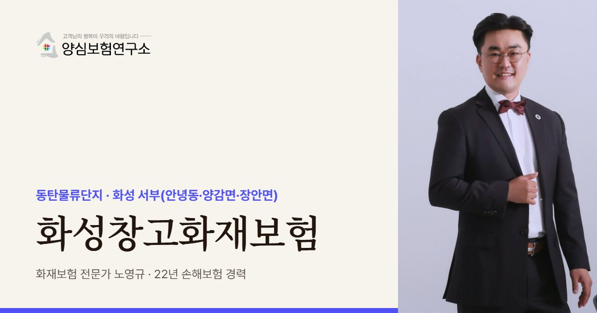

화성은 한 센터에 여러 화주의 물건이 함께 쌓이는 3PL 비중이 높아, 노영규 대표는 창고 안 물건이 누구 소유인지와 위탁 계약서의 책임 조항부터 확인합니다.
화성 안내
화성창고화재보험은 화성시 동탄물류단지와 안녕동·양감면·장안면 일대 창고가 건물, 보관 화물, 화주에 대한 배상책임을 불에 대비해 한 번에 설계하는 보험으로 통합니다. 컨설팅사 보고서(2023-03)에 따르면 동탄은 화성 면적의 8%에 불과하지만 시 전체 물류센터 면적의 73%가 이곳에 몰려 있습니다.
5,000평 이상 대형 센터를 쓰는 곳은 3PL이 47.9%로 가장 많고, 이커머스 29.9%, 패션 12.1% 순입니다. 3PL은 남의 물건을 맡아 보관하는 사업이라, 불이 나면 내 건물 피해보다 화주에게 물어줄 돈이 더 큰 쟁점이 되곤 합니다.
동탄에 더 지을 땅이 거의 남지 않으면서 새 창고는 안녕동, 양감면, 장안면 같은 서부로 넓어졌습니다. 양감면에는 평택파주고속도로 양감IC 옆에 약 1.5만 평 규모 센터가 들어섰습니다. 서부 신규 권역은 공장과 창고가 뒤섞인 곳이 많아 이웃 업종을 함께 봐야 합니다.
실제로 2024년 1월 양감면 요당리에서는 인화성 액체를 보관하던 단층 위험물 창고에 불이 나 대응 2단계가 내려졌습니다. 일반 상품 창고라도 담장 너머에 위험물 시설이 있다면 번짐 피해를 가정하고 가입 조건을 정하는 편이 안전합니다.
2024.01 양감면 요당리의 연면적 약 1,490㎡ 위험물(인화성 액체) 보관창고에서 불이 나 대응 2단계가 발령됐습니다. 관계자 2명은 대피했습니다. (서울신문, 경인일보)
주요 위험
한 층에 화주 수십 곳의 물건이 섞이면 누구 물건이 얼마나 탔는지 입증이 어려워집니다.
3PL 계약서에 손해 책임이 창고 쪽으로 정해져 있다면 배상책임 한도가 핵심입니다.
높은 랙에 박스가 촘촘히 쌓이면 불길이 위로 빠르게 번지고 스프링클러가 닿기 어렵습니다.
서부 권역은 화학물질 창고나 공장이 가까운 경우가 있어 번짐 위험을 봐야 합니다.
상하차 도크에 대기 중인 화물차와 팔레트 더미가 불씨가 되기도 합니다.
패션·이커머스 화물은 시즌마다 재고가 크게 오르내려 가입금액이 모자라기 쉽습니다.
※ 실제 보장 여부와 한도, 면책 사항은 가입하는 상품의 약관과 창고 현황에 따라 달라집니다.
방문 상담
동탄물류단지 대형 센터부터 안녕동, 양감IC 주변, 장안면 신축 창고까지 찾아가 랙 높이, 화주 구성, 이웃 시설을 함께 살핍니다.
꼭 확인할 점검 항목
고객 후기


※ 실제 계약고객과 나눈 카카오톡 상담과 후기 일부이며, 개인정보는 가렸습니다.
지역 상담 Q&A
계약 내용에 따라 다르지만 창고업자가 책임지는 구조라면 대비가 필요합니다. 화주 물건을 내 재산처럼 드는 방법과, 물어줄 책임을 배상책임으로 대비하는 방법 중 계약서에 맞는 쪽을 고릅니다.
충분하지 않은 경우가 많습니다. 건물주 보험은 보통 건물 자체만 다루므로 임차인의 화물, 랙, 설비와 건물주에게 물어줄 책임은 따로 챙겨야 합니다.
가입이 막히지는 않지만 인수 심사에서 주변 환경을 봅니다. 이웃 시설을 미리 알리고 조건을 맞추면 나중에 보상 과정에서 다툼이 줄어듭니다.
공사 중에는 공사 위험을, 준공 뒤에는 창고 운영 위험을 대비해야 하므로 착공 단계부터 상담하는 편이 좋습니다. 준공 시점에 빈틈없이 넘어가도록 일정을 함께 짭니다.
 MGF 베스트스토리텔러
MGF 베스트스토리텔러 단행본 출간
단행본 출간 월간 칼럼 연재
월간 칼럼 연재 고객 소개 후기
고객 소개 후기 지인 소개 후기
지인 소개 후기